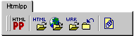

|
JScripts for HomeSite 4.0 | ||
|
|
Contributed by Enrique Bengoechea

OverviewHtmlpp is a free HTML preprocessor which allows to industrialise your HTML writting and simplifies site building and maintenance. Because Htmlpp is a command-line tool, writting and debugging Htmlpp documents can be a slow task. HomeSite is one of the best text-based HTML editor running under Windows I have found, and provides a customizable rich environment for writting HTML files. Here you can find several scripts for HomeSite 4.0 that help you use Htmlpp 4.2b from within HomeSite, so providing a comfortable graphic environment for running Htmlpp:
Download and InstallationPrerequisites:
Installation:
Behavior of the ScriptsWhenever you run Htmlpp from within Homesite using the main script, it will store the names of the source file, the generated HTML files, the working files, and the errors file in file 'last_process.txt', which is stored in the same directory than the scripts. The generated HTML files are obtained by parsing Htmlpp run-time output. Storing the info about last run is useful because all other scripts can use it by default to perform any operation, like 'Open intermediate working files'. Some of the scripts will work only if the active document has extensions .htp or .def. You can modify the scripts to accept different extensions as Htmlpp documents. htmlpp.js (Run Htmlpp)The script starts by closing all open files related to previous Htmlpp processing (htmlpp.out, which contains the captured screen output, errors.lst, and working files html0001.wrk, html002.wrk...). This is useful so as not to confuse files from different Htmlpp runs. Then Htmlpp will be invoked with the selected options, and its output captured into file htmlpp.out. If some error arises, it will prompt to open the errors file errors.lst. Working files html001.wrk, html002.wrk, etc. will be open if you selected it. Also, if you selected to edit or browse the generated HTML files, the script will parse htmlpp.out and open all generated files it founds. Information about all files is stored in file last_process.txt in the scripts directory. NOTE: The language option in the dialog just presets the standard variable LANG from the command line. If several languages are selected, the file will be processed once for each language presetting LANG accordingly each time. You can customize the script to adapt it to the languages you use. htmlpp_opprocfiles.js (Open Generated HTML Files)If there is only one open documente named htmlpp.out, invoking this script will parse it and open for editing all generated HTML files. Additionally, if there is selected text in that file, only that text will be parsed, what allows to selectively open files. If there is no open htmlpp.out file, the script will search file last_process.txtand use the information from last run. htmlpp_brfile.js (Browse First Generated HTML File)This script behaves exactly as the previous one but opens only the first HTML file found in the internal browser (because only one document can be shown at a time). htmlpp_opwrk.js (Open Working Files)This script opens all intermediate working files (html0001.wrk, html0002.wrk, etc) from last run of Htmlpp, provided Htmlpp was executed in debug mode. htmlpp_clall.js (Close All Last-Run Files)This script closes all files generated by last run of Htmlpp. htmlpp_opinclude.js (Open Included Files)This script parses current Htmlpp document and opens all included files. If some text is selected when invoking the script, only that text is parsed, allowing for selectively open included files. Scripts History
The unofficial HomeSite WebRing made possible by the Webring. | ||
|
|
|
{kind=link}